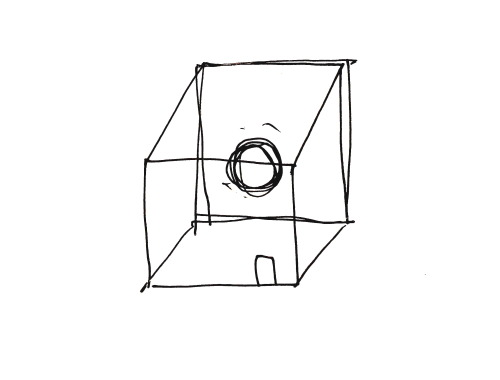

水玉コレクション No. 4 (2009)
for chamber orchestra
1111, 211, 2perc, hp, pf, strings
Duration: 18min.
commissioned by Izumi Sinfonietta Osaka
premiered by Norichika Iimori conductor, Izumi Sinfonietta Osaka
created in Osaka, June.13.2009
あなたは、とある部屋に入ってきました
そこは辺り一面真っ白です
隅の方に球体が現れました
ヒトの顔かそれよりも少し大きいくらいの球体です
光り、そして消えました
そして別の位置にまた現れ、消えました
近くまで歩いて行って丸い形の中をよく覗いてみると
鏡のような質感で
あなたの顔が歪んで見えます
鏡のようなオブジェは、この白い部屋の中で
あなただけではなく
奇妙なことに色々なものを映し出しています
···しばらく現れては消える球体を視て
あなたは部屋を後にしました
2009年作曲当時私は「音を視る」ことをコンセプトに音楽を書いていた。音という現象は実際目に見えないが、音そのものの輪郭を辿って聴き手自身の感覚の内で形や色、質感をすぐそばに感じ取るように音を構成していく。《Dots Collection》と題するこの作品はいずれも音一音（ひとかたまり）の在り方や質感を取り扱い、このNo. 4では素材に近い目線で一つ一つ、今この場の肌感覚での音現象そのものを観察する。音の質感はごく繊細に空間、体調、気分に至るまで様々な要素によって揺れ動く。次々現れては消える音の中に、今、あなたは何を捉えますか。
hand-drawn sketch by Yamane